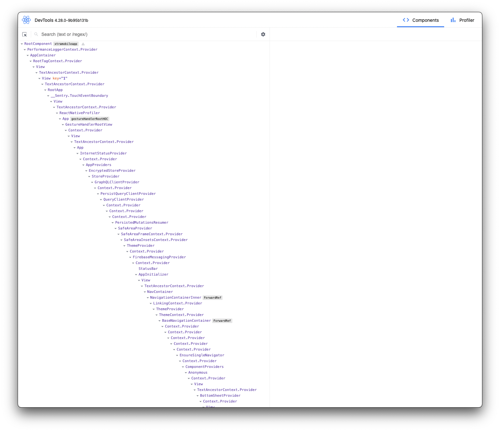
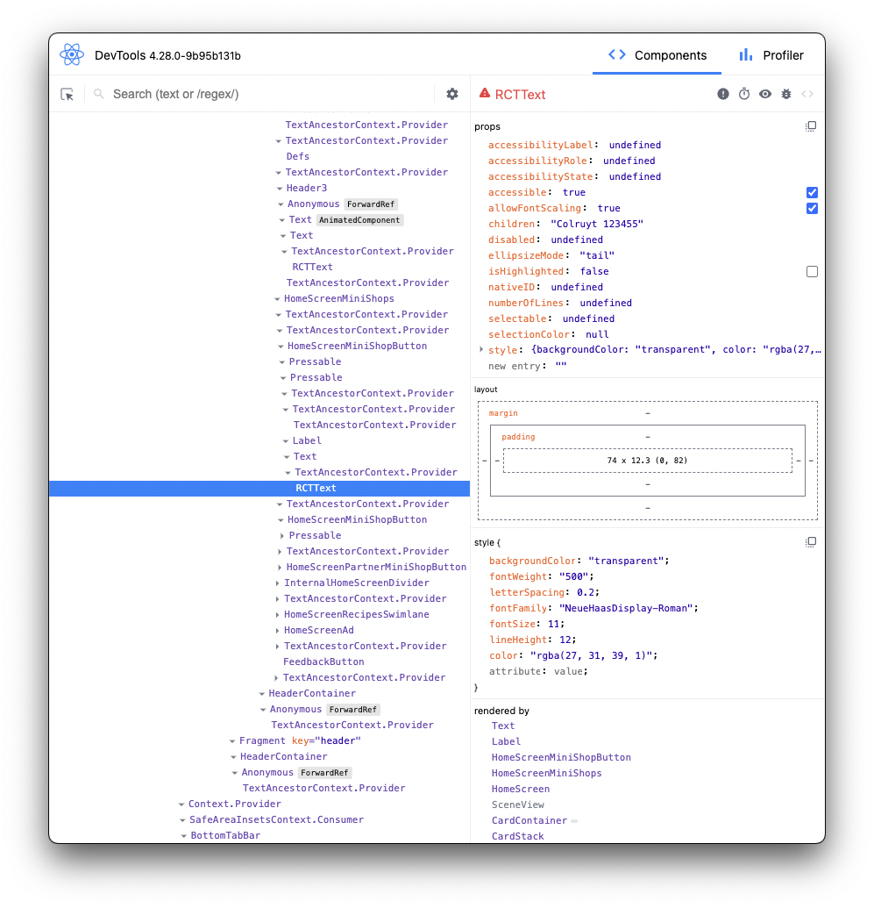
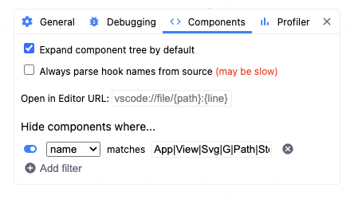
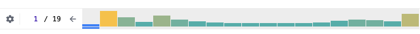

React (native) Performance
By Steven Van Eenoo
Agenda
- Techniques
- Context
- React Native
- Measure and monitor
Techniques
JavaScript defines 8 built-in types with 7 primitive types
null
undefined
boolean
number
string
symbol
bigint
Primitive types have the following characteristics:
Compared by value
3 === 3 // true
'abc' === 'abc' // true
Always immutable: properties can't be changed, added or removed
var str = 'abc';
str.length = 1;
str.length; // 3
str.foo = 1;
str.foo // undefined
var str2 = str.toUpperCase();
str; // abc
str2; // ABC
Fixed set: you can't define your own primitype types
All nonprimitive values are objects
Objects have the following characteristics:
Compared by reference
{} === {} // false
var obj1 = {};
var obj2 = obj1;
obj1 === obj2 // true
Mutable by default
var obj = {};
obj.foo = 1;
obj.foo // 1
User-extensible via constructors
The typeof operator inspects the type of the given value, and always returns one of 7 values
typeof undefined === "undefined"; // true
typeof true === "boolean"; // true
typeof 42 === "number"; // true
typeof "42" === "string"; // true
typeof Symbol() === "symbol"; // true
typeof { life: 42 } === "object"; // true
typeof 12345n === "bigint"; // true
What about null?
typeof null === "object"; // true
Memoization
an optimization technique used primarily to speed up computer programs by storing the results of expensive function calls and returning the cached result when the same inputs occur again.
In React, when we use memoization we're telling our components to remember the last time they rendered with certain props, and if those props haven't changed, just show the same output as before.
This can make our app run faster because we avoid unnecessary work.
React.Memo
Perform a shallow comparison of the previous and the next props.
This comparison checks if the prop values are the same by comparing their references. If the prop references are the same, React assumes that the component's output will be the same and skips the re-render.
Let's look at some examples 👀
Shallow Comparison
function shallow(objA, objB) {
if (objectIs(objA, objB)) {
return true;
}
if (typeof objA !== 'object' || objA === null || typeof objB !== 'object' || objB === null) {
return false;
}
var keysA = Object.keys(objA);
var keysB = Object.keys(objB);
if (keysA.length !== keysB.length) {
return false;
} // Test for A's keys different from B.
for (var i = 0; i < keysA.length; i++) {
var currentKey = keysA[i];
if (!hasOwnProperty.call(objB, currentKey) || !objectIs(objA[currentKey], objB[currentKey])) {
return false;
}
}
return true;
}
Quiz time 🎉
React.useMemo
A hook that helps optimize the performance by memoizing (caching) the result of a computation, preventing unnecessary recalculations.
const cachedValue = useMemo(calculateValue, dependencies)
useMemo use cases
1. Skipping expensive calculations
useMemo
Initial render: result is calculated
|
v
Subsequent render: compare dependencies from last render
|
v
If changed (compared with Object.is): recalculate
|
v
Else return calculated (cached) value
Let's look at some examples 👀
Remember Object.is comparison
2. Skipping re-rendering of components
Let's look at some examples 👀
3. Dependency of another Hook
3. Dependency of another Hook
3. Dependency of another Hook
The text dependency is now an immutable string 🙌
When trying to optimize rerenders, useMemo and useCallback in combination with memo are your best friends

There is no significant harm in memoizing everything
👎 Code becomes less readable
👎 Not all memoization is effective: a single value can easily break it
React.useContext
useContext is a React Hook that lets you read and subscribe to context from your component.
const value = useContext(SomeContext)
Let's start with an example 👀
Quiz time 🎉
Lessions learned
Whenever the provided value changes during a rerender, it triggers a rerender of all the consuming components!
Lessions learned
Always wrap the value with a useMemo
→ The value comparison is done with the same Object.is function
Lessions learned
- When you change any context value, all consuming components will rerender
- React.Context doesn't provide a way to subscribe to only a slice
- When you want to optimise React.Context for performance reasons, use other libraries like Zustand, Recoil, Legend-State , Redux, ...
Lessions learned
useContext() always looks for the closest provider above the component that calls it. It searches upwards and does not consider providers in the component from which you're calling useContext().
ExampleLessions learned: Zustand
- Never use the useStore hook returned from create → all consumers will trigger when changing any store value!
- Use dedicated selectors
Lessions learned: Zustand
- When selecting multiple values from a store, add the shallow function
Lessions learned: Zustand
Since zustand 4.4 we can use createWithEqualityFn
import { shallow } from 'zustand/shallow'
const useStore = createWithEqualityFn(
(set) => ({
bears: 0,
nuts: 10,
increasePopulation: () => set((state) => ({ bears: state.bears + 1 })),
eatNut: () => set((state) => ({ nuts: state.nuts - 1 })),
}),
shallow // Specify the default equality function
)
const useBears = useStore(
(state) => ({
bears: state.bears,
increasePopulation: state.increasePopulation
}),
)
React native performance
Hermes
- An open source JavaScript engine optimized for React Native
- Build-time precompilation of JavaScript into efficient bytecode that enables faster startup times playground
- Better memory management through improved garbage collection to reduce memory usage and improve runtime performance
- Enabled by default since React Native 0.70
Images
- React Native Fast Image → Aggressively cache images, preload images, priority loading, border-radius support
- WebP format: typically providing 3x smaller file sizes compared to PNG → Android requires an extra module. iOS requires 14+
- SVGs: render SVGs directly in the app using react-native-svg → using SVGs can reduce the size of images by 90% while keeping the quality intact.
- Resize and compress images to improve bandwidth and loading times → A lot of tools exist to automate to process
Lists
Flatlist
- It will look for a key prop on each item and use that for the React key → Best to always provide a keyExtractor function!
- FlatList is a Pure Component (like React.memo) → rerenders can be eliminated by using stable data/functions
- Always use a FlatList over a ScrollView for lists → ScrollView creates JS components and native views for everything all at once
Flatlist
Renders items lazily and removes items that scroll way off screen to save memory and processing time

Flatlist optimisations
1. getItemLayout: skips the measurement of dynamic content if you know the size (height or width) of items ahead of time
getItemLayout={(data, index) => ({
length: ITEM_HEIGHT,
offset: ITEM_HEIGHT * index,
index
})}
Flatlist optimisations
2. removeClippedSubviews: unloads off-screen views, freeing up resources.
FlatList optimisations
3. maxToRenderPerBatch: how many list items will be rendered on each scroll. Defaults to 10
→ a high number will give you a higher fill rate which results less blank spaces → A higher number will decrease performanceExample: If 2 items cover 100% of the screen height then set this prop to 3-5. If 5 items cover 100% of the screen height then set it to around 8.
FlatList optimisations
4. windowSize: the maximum number of items rendered outside of the visible area, in units of visible lengths. Defaults to 21
Example: if each item covers 50% of the device height (so 2 items in viewport) then you can set the windowSize to around 5. That should be enough because by the time you scroll next 10 items (2 * 5) new items would be rendered for sure.
FlatList optimisations
5. updateCellsBatchingPeriod: it tells the VirtualizedList the delay, in milliseconds, between batch renders.
→ it defines how frequently your component will be rendering the windowed items.FlatList optimisations
6. initialNumToRender: how many items to render in the initial batch. This should be enough to fill the screen. Defaults to 10
→ A lower number will improve the initial render performance of the list → A higher number will reduce initial render performance⚠️ set a number that's enough to fill the viewport in all supported devices, not more and not less!
FlatList optimisations
- There is no golden rule for most of these properties.
- Try to keep list items simple/light and avoid unnecessary View nesting
- Use React.memo for list items returned in renderItem
FlashList
Swap from FlatList in seconds. Get instant performance. 🪄
FlashList does a lot of these of these optimisations under the hood
FlashList Metrics: Load time
FlashList Metrics: Blank area
Animations
Animations: Animated
perfect for simple animations but limited in performance when trying to animate for example height
⚠️ you can only animate non-layout properties on the UI threadAnimations: Reanimated
- Built with performance in mind
- Handles complex animations and gestures out of the box
Measure and monitor
Measure
React DevTools
npx react-devtoolsComponents tab
Overview of rendered component tree
Components tab details
Components tab: settings

→ Hide components via filtersProfiler
- Groups performance info by commit: Commits are displayed in a bar chart near the top of the profiler: → The commit phase is when React Native applies layout calculation 
- Each bar in the chart represents a single commit
- The color and height of each bar corresponds to how long that commit took to render.
Profiler: Flamegraph
- The flame chart view represents the state of your application for a particular commit
- Each bar in the chart represents a React component
- 🟡 components: took more time
- 🔵 components: took less time
- 👽 components: did not render
Profiler: Ranked
- The ranked chart view represents a single commit
- Each bar in the chart represents a React component
- The chart is ordered so that the components which took the longest to render are at the top.
Let's profile 🕵️♂️
General remarks
- Profile the app in client builds to get the most accurate results Link
- Keep state/hooks as close as possible to your components
- Do not over optimise, React is fast and rerenders are not always problematic
Bonus ✨
en ze leefden nog lang en gelukkig
The end